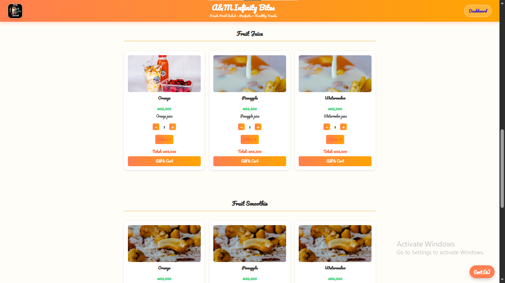
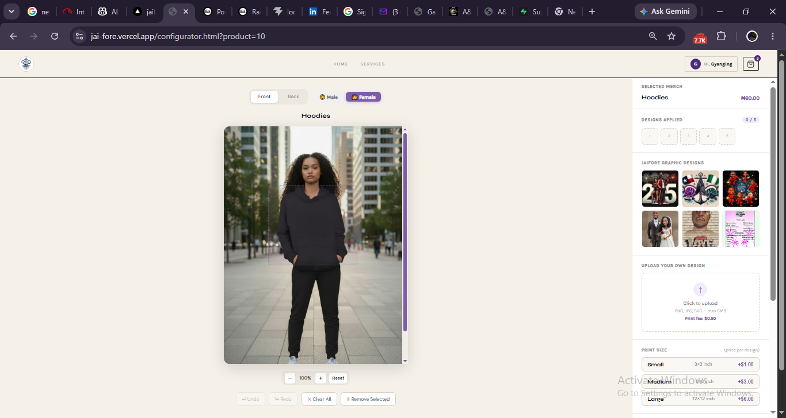
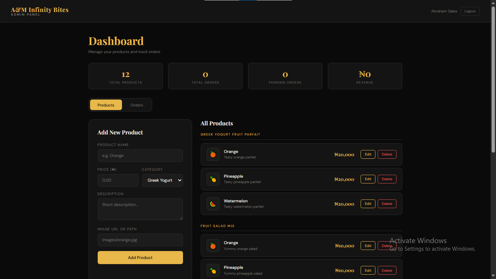
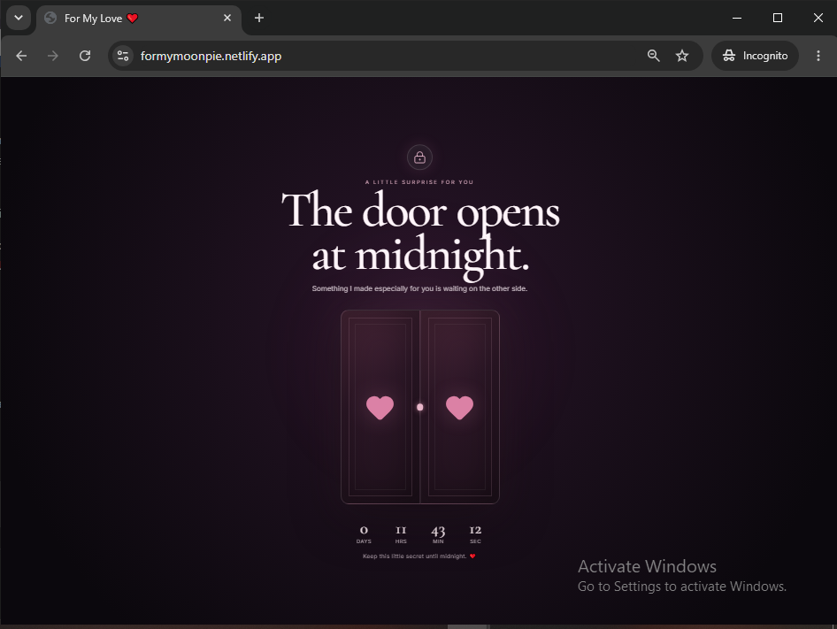

SEP 2024 — PRESENT
Full-Stack Developer / Web Developer
Developing websites and web applications designed to solve real-world problems.
Available for work
FULL-STACK DEVELOPER · KADUNA, NIGERIA
I’m Gaba Gyang, a full-stack developer building practical web experiences, secure APIs, databases, and dependable deployment.
01 / ABOUT
I work across the full web-development lifecycle: shaping a clear interface, building backend functionality, designing data flows, integrating services, and deploying the finished product.
My approach is straightforward: understand the business need, choose practical technology, and deliver software that is easy to use and maintain.
02 / EXPERIENCE
Professional full-stack and web development focused on practical, real-world problems.
SEP 2024 — PRESENT
Developing websites and web applications designed to solve real-world problems.
MAY 2026 · WORDPRESS MAINTENANCE
Maintenance work for malekanaturals.com .
03 / SELECTED PROJECTS
Jai’fore and A&M Infinity Bites each include a customer platform and administrative layer.

E-COMMERCE & ORDERING PLATFORM
An end-to-end e-commerce and ordering platform with a dynamic product menu, product categories, shopping cart, checkout workflow, customer dashboard, authentication, product CRUD, order management, and payment infrastructure.

FULL-STACK DIGITAL PLATFORM · LIVE
A full-stack digital platform combining a customer-facing frontend with backend services for authentication, products, orders, payments, transactions, users, print pricing, communication, monitoring, and business operations.
ADMINISTRATIVE DASHBOARD
The administrative and business-operations layer of the Jai'fore ecosystem, with protected dashboard access and management for products, orders, transactions, and users.
View repository
ADMINISTRATIVE DASHBOARD
The administrative counterpart to the A&M Infinity Bites platform.
View repository
04 / SKILLS
HTML5, CSS3, JavaScript, Tailwind CSS
Node.js, Express.js, REST APIs
PostgreSQL, SQL
Paystack, Axios, Nodemailer, Resend, Redis / ioredis, Sentry
JWT, bcrypt, CORS, API rate limiting, role-based access control
Git, GitHub, Vercel, Railway, GitHub Pages, Nodemon
05 / APPROACH
Clear, responsive interfaces for the people using the product.
Backend functionality, data flows, and integrations that support the experience.
Deployment-minded delivery that keeps the finished product maintainable.
06 / CONTACT
Available for work · Kaduna, Nigeria